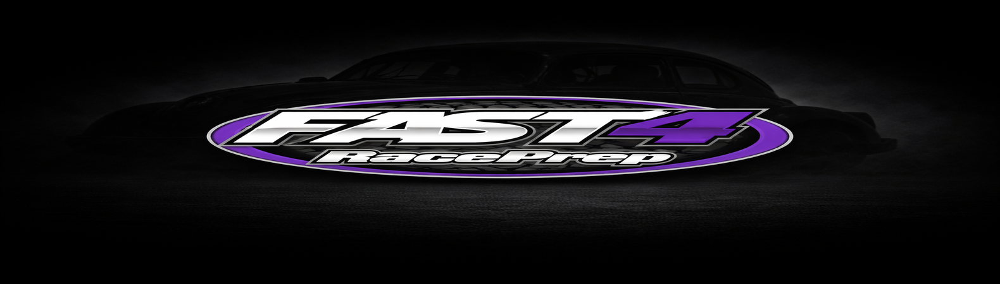
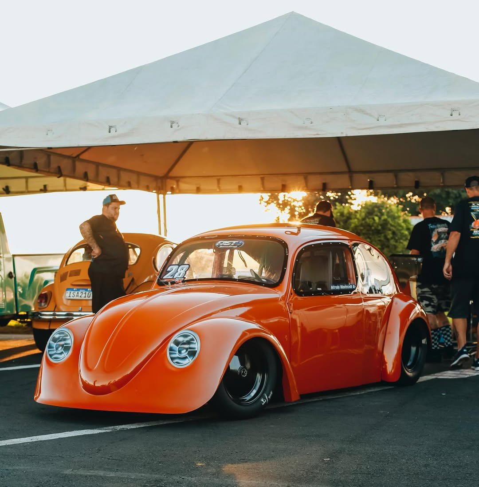

Nossa História...
A Fast4 RacePrep nasceu nas pistas de arrancada. Especializada em preparação de motores a ar de alta performance, buscamos sempre ultrapassar limites e entregar resultados extremos nas pistas e nas ruas.


A Fast4 RacePrep nasceu nas pistas de arrancada. Especializada em preparação de motores a ar de alta performance, buscamos sempre ultrapassar limites e entregar resultados extremos nas pistas e nas ruas.

Fusca de lata 1600cc mais rapido do mundo. Ele é pilotado por leandro passini.
Preparado por Fabio Peciulis, pela equipe Fast4 RacePrep, o carro sofreu um acidente na ultima prova
e agora estamos fazendo o CrushKiller 2.0.

Fusca de lata 2200cc mais rapido do mundo piotado por Caio Fabri,
preparado pela equipe Fast4 RacePrep

Fusca todo tubular Turbo, vai estrear na primeira etapa da Spid Cup. 2500cc.....

Fusca de lata 1600cc, pilotado por Fabio Furieli.
Veja no mapa abaixo como nos encontrar.